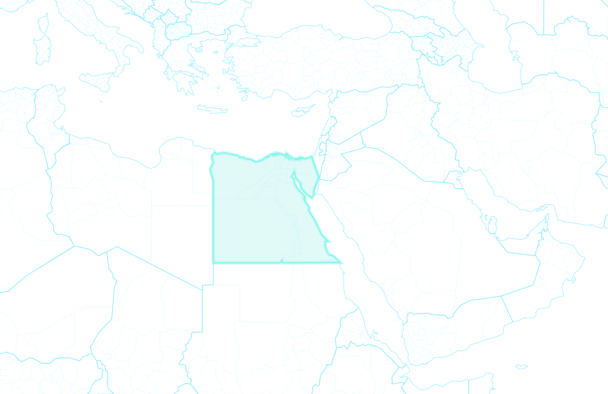

تتسع الاحتجاجات في تونس منذ 17 ديسمبر بعد أن أحرق شاب نفسه في سيدي بوزيد. يطالب المحتجون بفرص عمل وبخفض الأسعار، وتنقل القنوات العربية ما يجري كل يوم. يرى مستشاروك أن البطالة وارتفاع الأسعار في مصر قد يجعلان الشارع يتأثر بما يحدث.
إن لم تختر، يُختار الافتراضي بعد 7 أيام.